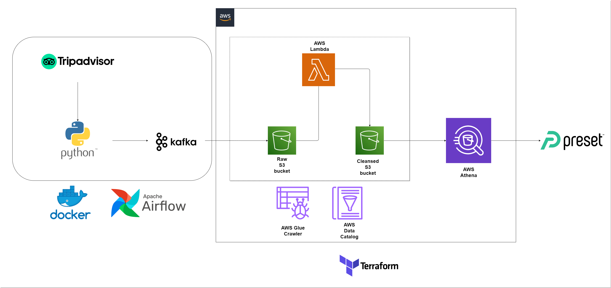
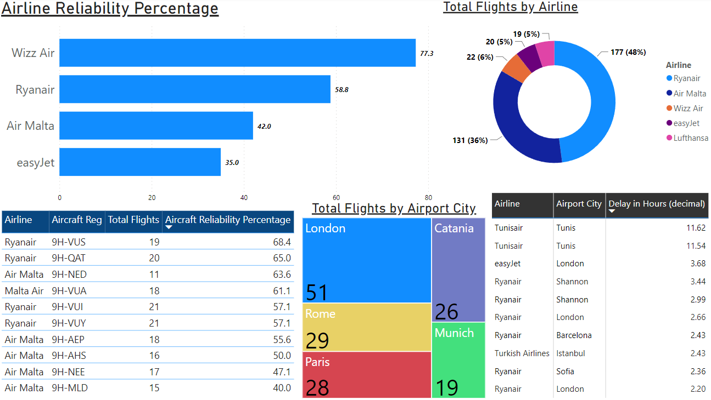
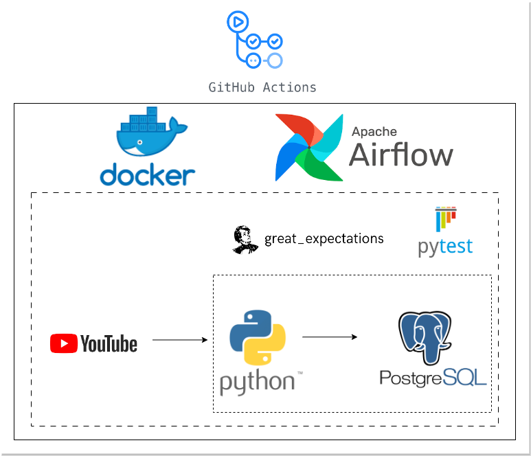

In this project we get familiar with popular data engineering services in AWS
while also using tools such as Python, Docker, Kafka & Airflow to setup an ELT data
pipeline. A Preset Dashboard was also created to visualize the results from the
project.
In this project we get familiar with popular Azure data engineering services, mainly;
Azure Data Factory (ADF), Azure Databricks, Azure Data Lake Storage (ADLS) Gen2 & Azure
Synapse.
A Power BI Dashboard was also created to visualize the results.


In this project we get familiar with data engineering tools such as Python, Docker & Airflow
to produce an ELT data pipeline. To make the pipeline more robust, best practices of
data quality & functional testing and continuous integration/ continuous deployment (CI/CD) are
also implemented.